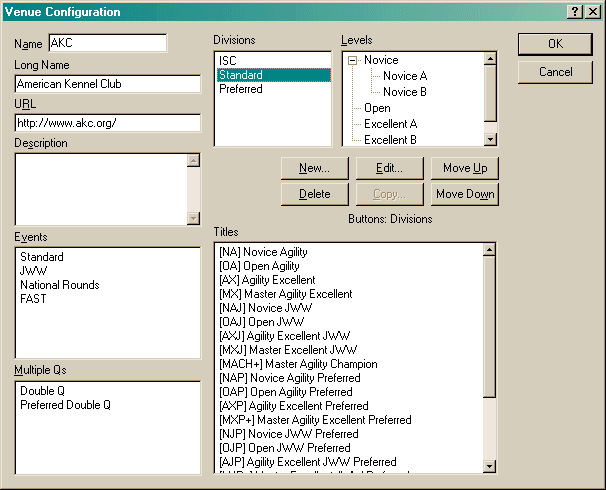
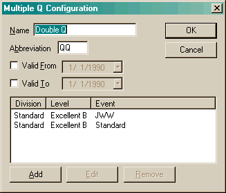
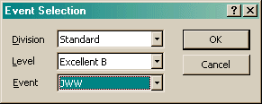
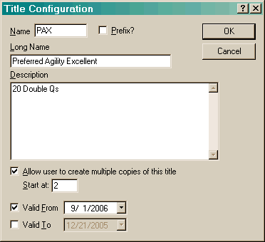

The Venue Configuration dialog allows you to edit various aspects about a specific venue.

The venue Name must be unique. There cannot be two venues with the same name. The URL field is used to enter the venue's URL. The Description field is for any comments you wish to make.
Lifetime Points Name is used to change the name of Lifetime Points in the Points view. Some venues have special names for this, such as UKC which uses 'All Star'. If you set a value here, do not append 'Points' to the name. The program will do that automatically.
The six buttons located in the center of the dialog are sensitive to which control last has focus. The text just below those buttons tell you what item they will act on.
When you first open this dialog for an existing venue, the Titles section will appear blank. This is because titles are assigned to a specific division. You must select a division before anything will appear. In the above dialog, the "Standard" division has been selected. All titles available in the Standard division are then visible in the Titles section. The Levels section is also sensitive to the selected division.
Only the Levels section can have sub-items. Sub-items are items that are located under another. For instance, "Novice A" is a sub-item of "Novice".
When you create or edit the name of a division or level, a simple dialog asking for the name will open.
When you create or edit an event, the Event Configuration dialog will open.
When you create or edit a Multiple Q, the following dialog will open:

This dialog allows you to associate several runs together for scoring
purposes. Currently, AKC uses this for their DoubleQ and UKC uses it for their
TripleQ. Clicking the Add or Edit button will bring up the
following dialog:

When you create or edit a title, the following dialog will open:

The Name of the title is the abbreviation, for instance "NATCH".
The Long Name is a more descriptive name, for instance "NADAC Agility Trial Champion".
The Description section is for any notes you would like to make, typically what it takes to earn this title.
Allow multiple allows a title to be added more than once. Typically, once you have earned a title, you cannot earn it again. However, in some venues, the higher level titles can repeat. An example of this is the MACH title in AKC. The Start at field is used to specify where the repeating title will start. Usually this is 2. In some cases, like NADAC, this will start higher due to other existing titles.
The Valid From and Valid To fields allow for a new title to be phased in, or an older title to be phased out. These only affect whether the title will be shown to the user for selection. They allow for evolving rule changes within a venue.